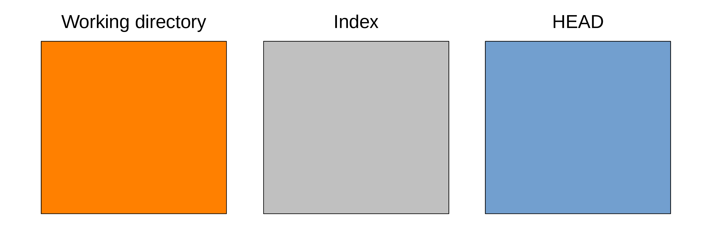
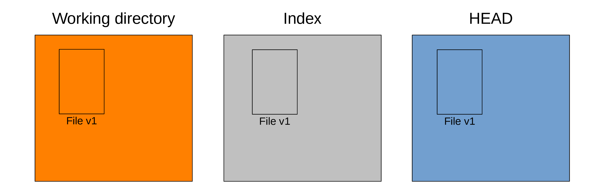

The three trees of Git
One useful mental representation of the functioning of Git is to imagine three file trees.

The three trees of Git
Working directory
Let’s imagine that you are starting to work on a project.
First, you create a directory.
In it, you create several sub-directories.
In those, you create a number of files.
You can open these files, read them, edit them, etc. This is something you are very familiar with.
In the Git world, this is the working directory or working tree of the project.
That is: an uncompressed version of your files that you can access and edit.
You can think of it as a sandbox because this is where you can experiment with the project. This is where the project gets developed.
Now, Git has two other important pieces in its architecture.
Index
If you want the project history to be useful to future you, it has to be nice and tidy. You don’t want to record snapshots haphazardly or you will never be able to find anything back.
Before you record a snapshot, you carefully select the elements of the project as it is now that would be useful to write to the project history together. The index or staging area is what allows to do that: it contains the suggested future snapshot.
HEAD
Finally, the last tree in Git architecture is one snapshot in the project history that serves as a reference version of the project: if you want to see what you have been experimenting on in your “sandbox”, you need to compare the state of the working directory with some snapshot.
Remember that HEAD is a pointer pointing at a branch, that a branch is itself a pointer pointing at a commit, and finally that a commit is a Git object pointing at a snapshot. When the HEAD pointer moves around, whatever snapshot it points to populates the HEAD tree.
As we saw earlier, when you create a commit, HEAD automatically points to the new commit. So the HEAD tree is often filled with the last snapshot you created. But—as we will see later—we can move the HEAD pointer around through other ways. So the HEAD tree can be populated by any snapshot in your project history.
Status of the three trees
To display the status of these trees, you run:
git statusThree trees in action
Clean working tree
We say that the working tree is “clean” when all changes tracked by Git were staged and committed:
Here is an example for a project with a single file called File at version v1.

Making changes to the working tree
When you edit files in your project, you make changes in the working directory or working tree.
For instance, you make changes to File. Let’s say that it is now at version v2:
The other two trees remain at version v1.
If you run git status, this is what you get:
On branch main
Changes not staged for commit:
(use "git add <file>..." to update what will be committed)
(use "git restore <file>..." to discard changes in working directory)
modified: File
no changes added to commit (use "git add" and/or "git commit -a")Staging changes
You stage that file (meaning that you will include the changes of that file in the next commit) with:
git add FileAfter which, your Git trees look like this:
Now, the index also has File at version v2 and git status returns:
On branch main
Changes to be committed:
(use "git restore --staged <file>..." to unstage)
modified: FileCommitting changes
Finally, you create a snapshot and the commit pointing to it—recording the staged changes to history—with:
git commit -m "Added File"-m is a flag that allows to provide the commit message directly in the command line. If you don’t use it, Git will open a text editor so that you can type the message. Without a message, there can be no commit.
Now your trees look like this:
Our working tree is clean again and git status returns:
On branch main
nothing to commit, working tree cleanThis means that there are no uncommitted changes in the working tree or the staging area: all the changes have been written to history.
You don’t have to stage all the changes in the working directory before making a commit; that is actually the whole point of the staging area.
This means that the working directory is not necessarily clean after you have created a new commit.